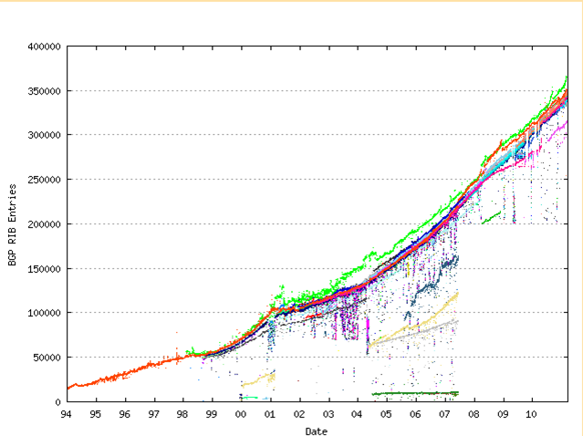
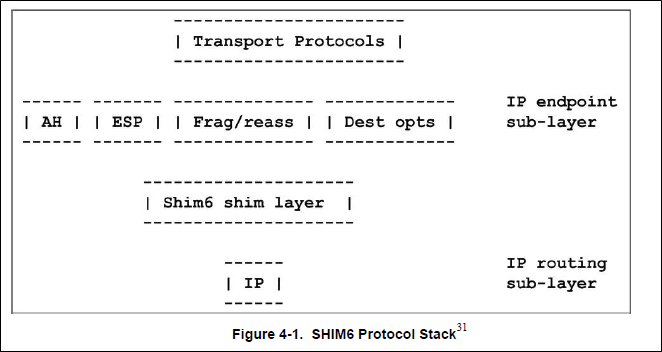

New Projects
Sam Bowne
City College of San Francisco
Viewing RA Packets With Wireshark
GOGO6 Tunnel with Router Advertisements
SLAAC (Stateless Address Autoconfiguration)
- RA packet specified first 64 bits of address & gateway address
- Host generates the last 64 bits
Router Advertisement (RA)
Ubuntu Linux 10.10 SLAAC Works Properly
BackTrack 4 R2 Linux Requires Manual Configuration
IPv4-to-IPv6 Reverse Proxy
haproxy
- Linux proxya nd load-balancer
- This configuration listens on IPv6 for clients and proxies to IPv4
Proxy Listening on IPv6
- Port 80 for HTTP
- Port 442 for HTTPS
Proxy in Action
- Put the IPv6 address in the browser
- Press Enter
- CCSF Web pages opens
and then
Ch 4: IPv6 Advanced Topics
Topics
- Multihoming
- Multicast
- QoS
- Mobile Ipv6
- Jumbograms
- DHCP
- Prefix renumbering
4.1: Multihoming
- Multiple addresses on the same node
- Advantages:
- Multiple paths to the Internet for fault-tolerance or load-balancing
- QoS differentiation
- Security policy enforcement
- Costs:
- Either the Internet backbone needs multiple routes to the host, or
- The node must sort out the traffic
Provider-Independent Addresses
- IP addresses don't change when you change ISPs
- Easiest for end users to manage
- Fragments and increaes the Internet backbone routing tables
- ARIN will give qualifying companies a /48, privder-independent
Growth of the BGP
1994 to Present

- Ipv6 BGP table has 2000 routes at present, but it is growing
- Link Ch 4c
Site Multihoming by IPv6 Intermediation (SHIM6) Specification
- A way to limit IPv6 BGP table growth
- Splits layer 3 into sublayers

4.2: IPv6 Multicast
- IPv4 Broadcast packets are ready by every node that receives them
- Multicast packets are only read by nodes that have subscribed to that multicast group
Multicast Advantages
- Sender only sends to ccreate one packet for many receivers
- Less bandwidth consumption
- Sender doesnt' need to know or remember how many listeners there are
- Typical uses: streaming audio or video, router updates, Ghosting hard drives
Neighbor Discovery in IPv6
Well-Know Multicast Addresses
- Link-local scope
FF02::1 All NodesFF02::2 All RoutersFF02::1:2 All DCHP Agetns
Multicast Listener Discovery (MLD)
- A protocol used by interfaces to join and leave multicast groups
- Routers keep track of these groups for each itnerface onw hcih they forward packets
- Uses Multicast Listner Query and
- Multicast Listener Report packets
Multicast Address format
- Always starts with FF
- Flags are 0 for well-knwon addresses
Demonstration
- Using IPCONFIG to find the Interface ID in Windows 7 (%12)
- IPv6 address ends in b225
Demonstration
- Sniff on the correct adapter in Wireshark
- IPv6 address ends in b225
Ping Local Interface ff01::1
Ping Link-Local Interface ff02::1
4.3 IPv6 Quality of Service (QoS)
- QoS includes several techniques to adjust performance for different types of traffic
- Streaming media need low latency but can tolerate some packet loss
- File transfer can tolerate latency but not packet loss
IPv6 Adtvantages For QoS
(not fully implemented yet)
- End-to-end addressing; no need for NAT
- Simpler header
- Larger packet sizes
- No in-route fragmentation
- No broadcast & mroe efficient multicast
- A new Flow Label field and larter Traffic Class field in the main IPv6 header
MIPv6 Tems
- Mobile Node (MN). A node using MIPv6 to change its point of network attachment
- Home Address (HoA). The permanent, routable unicast addres sof the MN
- Home Link. The link oon which the MN's HoA is defined
- Foreign Link. Any link except the home link
- Care-Of Address (CoA). A routable unicast address used by the MN on a foreign link
- Correspondent Node (CN). a peer which the MN is communicating
More MiPv6 Terms
- Home Agent (HA). A router on the MN's Home Link with which the MN register its CoA and which forwards traffic to and from the MN and its CoA
- Route optimization. Direct communications between a MN and CN without involving a HA
4.5 Jumbograms
- With an Extension Header, packets larger than 65,536 bytes are allowed
- Up to 4 GB
- But they will only become pratical when networks handle packet sizes that big (not yet)
4.6 Address Selection
- IPv6 interfaces have many addresses, so it is not obvious how to select from the available source addresses (or even destination addresses) when sending a packet
- The selection process is common-sense; use the smallest scope, avoid deprecated addresses, etc
4.7 Dynamic Host Configuration Protocol (DHCP) for IPv6
- SLAAC doesn't deliver DNS server info
- DHCP is Stateful, and requires a server
- Three primary configuration options are available for IPv6 interfaces:
- 1. Use autoconfiguration and not DHCPv6.
- 2. Use DHCPv6 and not autoconfiguration.
- 3. Get an address with autoconfiguration and then use DHCPv6 to retrieve additional information.
4.8 IPv6 Prefix Renumbering
- When you change ISPs, you need to update
- Manually assigned addresses for interfaces on routers
- Routing information and link prefixes advertised by routers
- Addresses on routers, firewalls, and packet filters used for access control or ingress filtering
- Addresses assigned to interfaces with stateless address autoconfiguration
- Addresses and other information provide by DHCPv6
- DNS records (primarily AAA and PTR records, as well as DNSSEC)
- All other instances of addresses in applications, command sequences, configuration files, and elsewhere